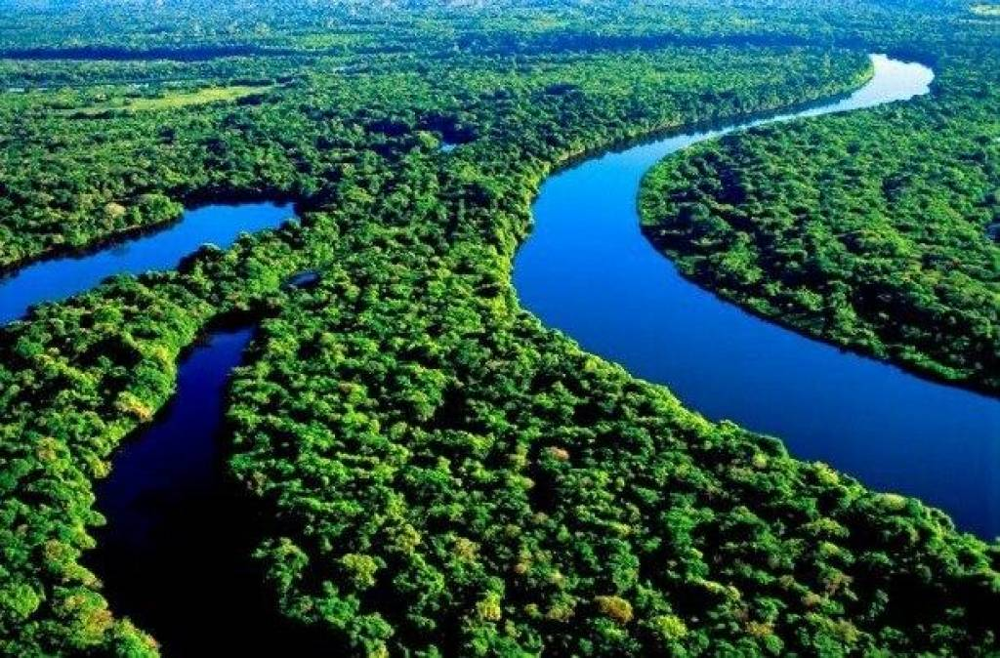

Река Амазонка

Ну а эту реку вы все наверняка знаете, Амазонка по праву считается одной из величайших рек нашей планеты. Всё в Амазонке принимает гигантские размеры: сом может достигать 450 кг, а на мелководьях водятся огромнейшие змеи - Анаконды. Амазонка это пристанище острозубых пираний и бычьих акул, которые чрезвычайно агрессивны и непредсказуемы. Амазонка, безусловно, не из тех речушек для неспешного послеполуденного плавания, Также река кишит кайманами, пираньями и электрическими угрями.
На главную